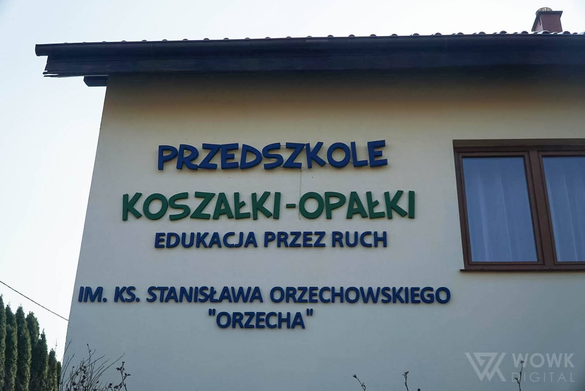
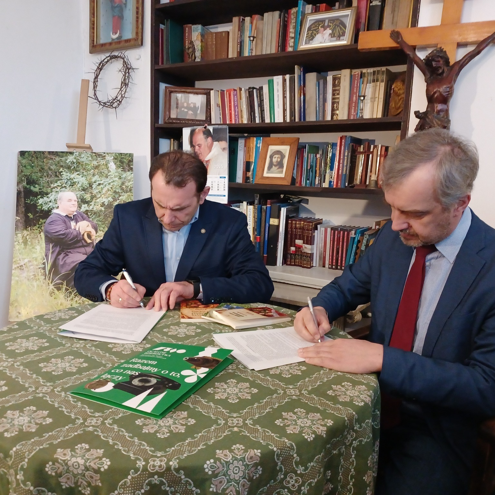
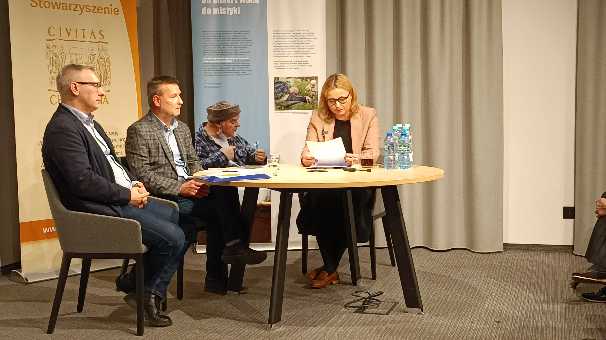
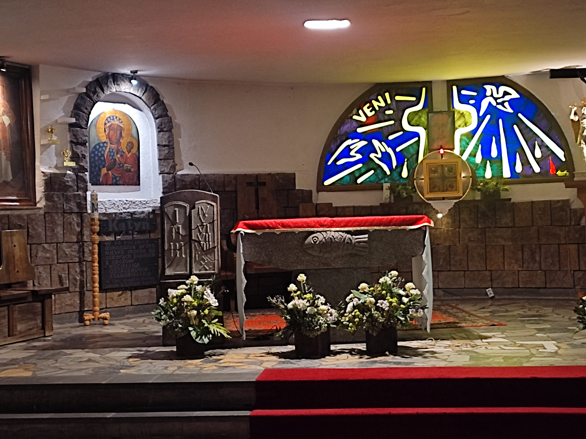
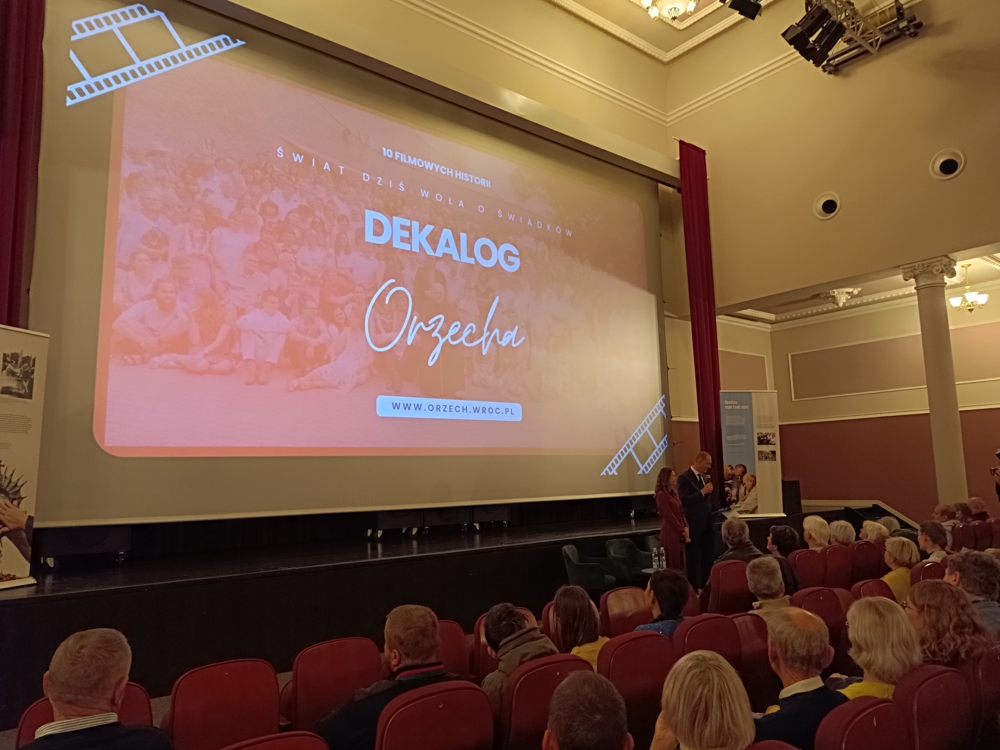
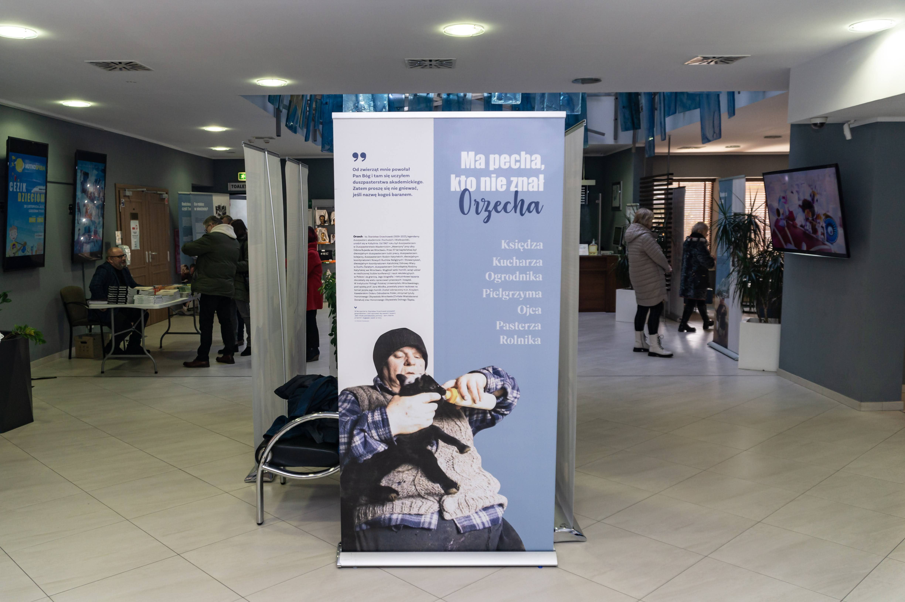

A oto przedstawienie niektórych wydarzeń jakie miały miejsce w 2025 roku:

Przedszkole Publiczne „Koszałki-Opałki” we Wrocławiu otrzymało imię ks. Stanisława „Orzecha” Orzechowskiego. Był to dla naszego Stowarzyszenia moment niezwykle ważny i bliski sercu.
Uroczystość rozpoczęła się Mszą Świętą, a następnie wspólne świętowanie przeniosło się do przedszkola, gdzie odsłonięto pamiątkową tablicę i odśpiewano hymn przygotowany na tę okazję.
Podpisaliśmy porozumienie z Ośrodkiem „Pamięć i Przyszłość”. To ważny krok w upamiętnianiu naszego duszpasterza oraz włączeniu się w program „Ocalone dziedzictwa. Regionalne Izby Pamięci”.
Współpraca umożliwi digitalizację i zabezpieczenie dokumentów oraz pamiątek związanych z „Orzechem”. Obecnie trwają prace związane z przeglądaniem i porządkowaniem dokumentów, pism oraz pamiątek. Wierzymy, że dziedzictwo „Orzecha” przetrwa i będzie inspirować kolejne pokolenia.
Przed nami ogrom pracy, aby to wszystko udokumentować. Jeśli chciałbyś pomóc w archiwizowaniu materiałów, skontaktuj się z nami:


Odbyło się spotkanie oraz panel dyskusyjny pt. „Do żywego mnie obchodzi to, co się dzieje z Polską…” – patriotyzm według ks. Stanisława Orzechowskiego „Orzecha”, organizowany przez Wrocławski oddział Civitas Christiana.
Dyskusja poświęcona była refleksji nad tym, w jaki sposób myśl ks. Orzechowskiego przejawiała się w jego życiu oraz jak można ją realizować współcześnie. Uczestnicy panelu dzielili się świadectwami i głęboką analizą postawy patriotycznej duszpasterza.

Odprawiona została Msza Święta w intencji śp. ks. Stanisława Orzechowskiego. Po Mszy odbyło się pierwsze w historii oprowadzanie po Duszpasterstwie Akademickim. Spotkanie miało charakter historyczno-wspomnieniowy.
Uczestnicy mieli okazję zapoznać się z historią miejsca oraz usłyszeli wiele opowieści związanych z działalnością duszpasterstwa w czasie stanu wojennego. Spotkanie zakończyła prezentacja zdjęć z okresu rozbudowy ośrodka w latach 1991–2000, przybliżająca trud i zaangażowanie wielu ludzi w tworzenie tego miejsca.

Tego dnia w Oławie, w kinie Odra, odbył się pokaz filmu „Orzech – zawsze chciałem być z ludźmi” oraz premiera nowego odcinka z serii „Dekalog Orzecha”, poświęconego rodzinie Ostrowskich, pt. „Rodzina to drużyna”.
Pokaz filmowy odbył się na zaproszenie Fundacji dla Rodziny. To był czas na wspólną integrację, wymianę myśli oraz ponowne spotkanie z wartościami, którymi żył i których uczył ks. Stanisław Orzechowski.
Od kilku lat towarzyszy nam wystawa pt. „Ma pecha, kto nie znał Orzecha”, prezentująca na 18 roll-upach duszpasterską działalność ks. Stanisława Orzechowskiego. Dotychczas pokazaliśmy ją w ponad 50 miejscach na terenie Archidiecezji Wrocławskiej, Diecezji Opolskiej i Legnickiej, a w tym roku także w Warszawie – w kościele św. Stanisława Kostki, gdzie posługiwał ks. Jerzy Popiełuszko.
Wystawie towarzyszy kronika, w której odwiedzający wpisują swoje świadectwa. Jest ich wiele – przytoczymy dwa z nich:
Zbierane świadectwa będą w przyszłości cenną częścią izby pamięci i mogą stać się inspiracją do działania i umocnieniem wiary dla kolejnych pokoleń.

Jeśli chcesz, aby wystawa zawitała do Twojej parafii lub miejscowości, skontaktuj się z nami: